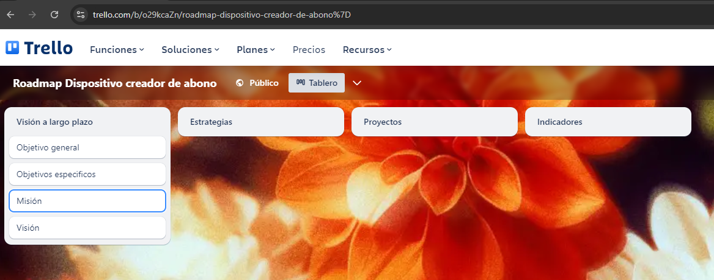

Definición de gestión de tecnología
"Campo interdisciplinario que mezcla conocimientos de ingeniería, ciencia y administración con el fin de planear, desarrollar e implantar soluciones tecnológicas que contribuyan al logro de objetivos estratégicos y tácticos de una organización".
Clases de tecnología
-
Tipo de producto
- Tecnologías duras
- Tecnologías blandas
-
James Thompson
- Tecnologías flexibles
- Tecnologías fijas
-
Nivel de innovación
- Tecnologías de punto
- Tecnologías adecuadas
-
Aplicación
- Tecnologías de operación
- Tecnologías de equipo
- Tecnologías de producto
Evolución de tecnología
"La tecnología existe desde el inicio de la especie aunque no ha sido llamada como tal sino hasta el siglo 18, a lo largo de los diferentes periodos de la humanidad, ha habido descubrimientos que modificaron la manera en la que el ser humano se relaciona con el mismo y con el medio que los rodea, de aquí tenemos las tecnologías primitivas o clásicas, desembocan en el descubrimiento del fuego la invención de la rueda o la escritura, tecnologías medievales incluyen inventos tan importantes como la imprenta, el desarrollo de las tecnologías de navegación o el perfeccionamiento de la tecnología militar, tecnología en la manufactura del siglo 18, el desarrollo tecnológico de los procesos de manufactura resultaron determinantes para la revolución industrial, uno de los inventos más destacados de esta época fue la máquina de vapor, durante el siglo 19 surgieron el telégrafo, la bombilla, el teléfono, el automóvil, tecnología de la información y comunicación, en el siglo 20 la tecnología evolucionó en el área de la información y la comunicación, el avión, la radio, la televisión el computador son claves en este aspecto, se desarrollaron las tecnologías avanzadas que incluyen el uso de la energía nuclear, la nanotecnología, la biotecnología y demás, actualmente la tecnología considerada avanzada e inventada recientemente lleva el nombre de tecnología de punta también llamada última tecnología o alta tecnología es aquella que se encuentra en el estado más avanzado de desarrollo o sencillamente la tecnología más avanzada disponible en este momento, por ejemplo en el campo de la telefonía móvil los dispositivos que hoy tienen tecnología de punta son aquellos con pantalla táctil, conexión a internet, cámaras fotográficas con buena resolución y la posibilidad de reproducir música y vídeos entre muchas otras características."
"Otros ejemplos de tecnologías: la tecnología 5g presenta grandes avances en la conectividad, el internet de las cosas, interconexión digital de dispositivos en el hogar, la oficina y a nivel mundial mediante servicios en la nube donde dispositivos y artefactos se comunican y responden a nuestras instrucciones de voz e inteligencia artificial que se aplica en la creación de máquinas que imitan las funciones cognitivas de los seres humanos, esta tecnología se utiliza en varias disciplinas como economía, medicina, transporte, software de videojuegos, reconocimiento del habla."
"La robótica que es el diseño y fabricación de robots maquinarias y dispositivos autónomos con comportamientos avanzados y evolutivos, las cripto monedas que son un tipo de divisa digital que utiliza una tecnología de registro distribuido que permite registrar y sincronizar transacciones entre múltiples usuarios en distintas ubicaciones, vehículos autónomos y drones donde se utiliza la tecnología para la creación de automóviles sin conductor que están programados para imitar las capacidades humanas de manejo y control".
Descripción de contenido de una hoja de ruta de gestión tecnológica
Tablero en Trello

Elementos de la metodología del proceso objeto
Los siguientes son puntos clave de la metodología que fueron indicados en clase:
-
Foco en los Procesos como Entidades Independientes
En el Proceso Objeto, cada proceso dentro de la
organización es tratado como un objeto independiente que tiene
entradas, salidas, recursos, y reglas de funcionamiento. Este enfoque
permite un análisis detallado y una gestión precisa de cada proceso,
facilitando su optimización.
-
Modelado de Procesos
El modelado de procesos es fundamental en esta
metodología. Se utilizan herramientas y técnicas para representar
gráficamente los procesos, identificando los pasos, actores
involucrados, insumos, y resultados esperados.
-
Optimización continua
El Proceso Objeto no solo busca modelar y gestionar
procesos, sino también optimizarlos continuamente. A través del
análisis de datos y la retroalimentación, los procesos son ajustados y
mejorados para aumentar su eficiencia y efectividad.
-
Enfoque en la eficiencia y la calidad
La metodología pone un fuerte énfasis en la eficiencia de
los procesos y en la calidad de los resultados. Se utilizan indicadores
de desempeño para monitorear la eficacia de los procesos y asegurar
que cumplen con los estándares de calidad establecidos.
-
Integración con la estrategia organizacional
Los procesos gestionados bajo la metodología del
Proceso Objeto están alineados con la estrategia general de la
organización. Esto asegura que cada proceso contribuya al logro de
los objetivos estratégicos y que los recursos tecnológicos se utilicen
de manera óptima.
-
Uso de tecnología para la automatización
La automatización juega un papel crucial en la
metodología del Proceso Objeto. Se emplea tecnología avanzada para
automatizar tareas repetitivas o propensas a errores dentro de los
procesos, liberando así recursos humanos para tareas de mayor valor.
-
Colaboración y comunicación
El Proceso Objeto fomenta la colaboración entre
diferentes departamentos y áreas funcionales para asegurar que los
procesos sean coherentes y estén bien integrados dentro de la
organización. La comunicación es clave para identificar
interdependencias y evitar silos de información.
-
Documentación estructurada
La metodología requiere una documentación detallada y
estructurada de cada proceso, incluyendo sus objetivos, pasos, roles
involucrados, y puntos de control. Esta documentación sirve como
referencia para la capacitación, auditorías, y futuras mejoras.
-
Medición y análisis de desempeño
Se implementan métricas y herramientas de análisis
para medir el desempeño de los procesos. Esto permite a la
organización identificar áreas de ineficiencia, establecer metas de
mejora y evaluar el impacto de los cambios implementados.